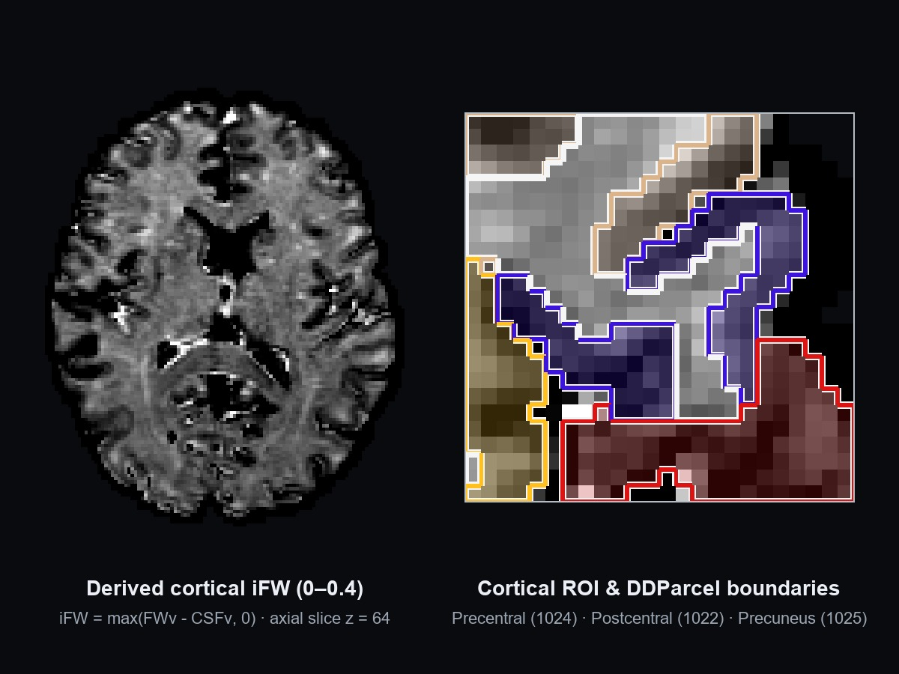
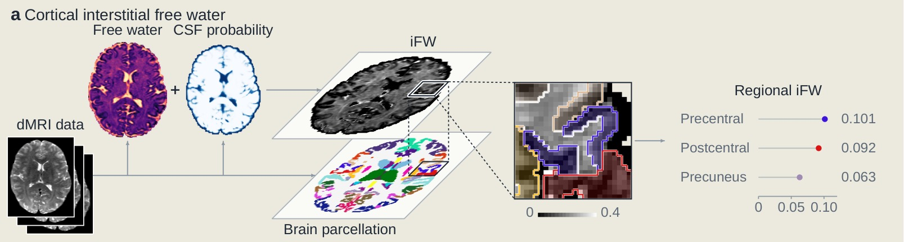
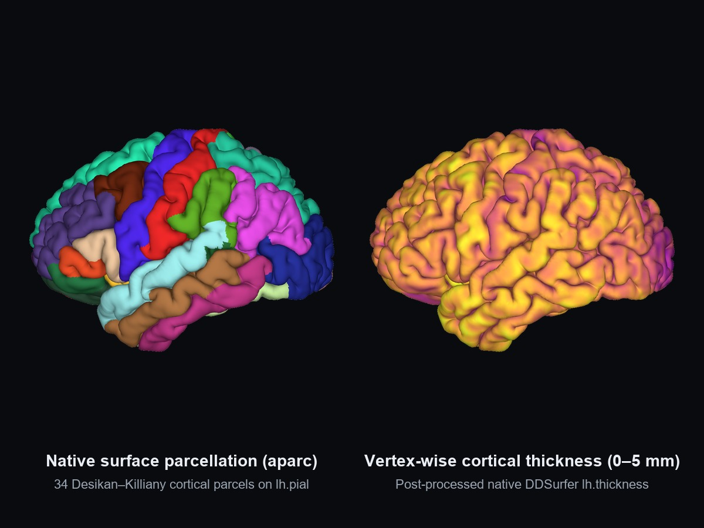
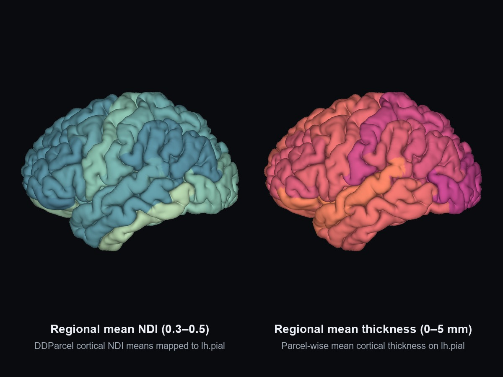
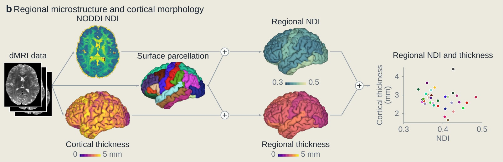
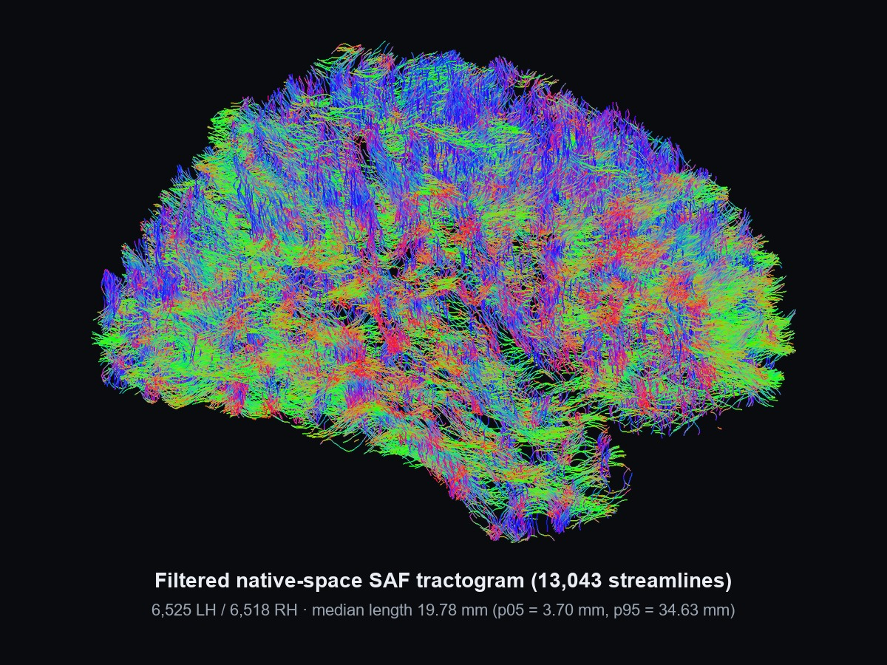
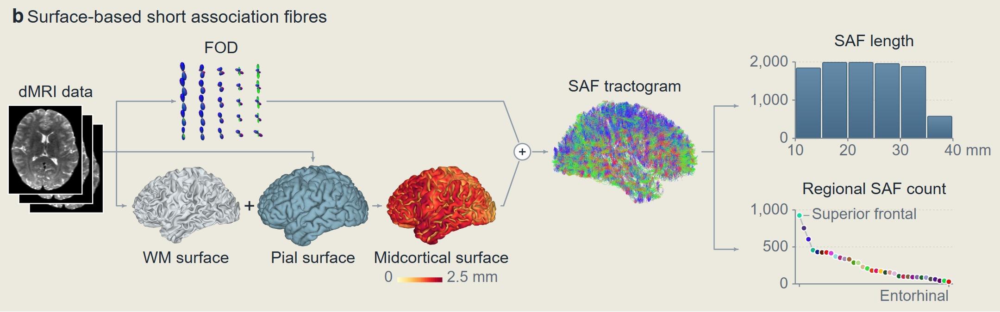

Representative maps, surfaces, pathways and networks from the available analysis routes. Each view highlights a different product in native diffusion space.
Maps, cortical surfaces, fiber bundles and connectomes from the available analysis routes. Open full-size SVG
Choosing routes
Workflow overview.
From dMRI preparation to anatomical priors and downstream analyses.
Get started
From installation to your first result.
AInstall, run and review with your Agent.(Recommended)
Read the Skill
We provide an install-and-use Skill for SlicerDSpace. Give its SKILL.md to your local Agent to follow the project's setup, analysis and result-review workflow.
The prompts link to SKILL.md as the entry point. To install the Skill in your Agent, copy the complete slicerdspace folder with its references, scripts and templates.
Read https://github.com/NeuroDMRI/SlicerDSpace/blob/main/.agents/skills/slicerdspace/SKILL.md.
Install and enable SlicerDSpace in my local 3D Slicer.
Set up the required dependencies and download the corresponding model weights.
Your Agent checks storage space and existing resources, waits for your choice and saves the path for later use. It prepares only the selected analyses. Confirm licenses and restarts when requested.
Use an existing installation
Replace the input and output paths, and choose the methods your study needs. This example requests DDParcel, CSD/ACT tractography and a structural connectome.
Analysis prompt
Read https://github.com/NeuroDMRI/SlicerDSpace/blob/main/.agents/skills/slicerdspace/SKILL.md.
Use SlicerDSpace to run DDParcel brain parcellation, CSD/ACT tractography and structural connectome construction for /path/to/subject; save results to /path/to/results.
Show me the plan and wait for confirmation before running. Afterwards, summarize the outputs and QC findings.
BOr set up manually
Install the module
Start with 3D Slicer; the protocol reference is version 5.10. Clone the source and create a separate extension installation:
Replace 5.10 with the major/minor version shown in Slicer’s About dialog. The script stages the module and reports its installation directory.
Add the module path
Open Edit › Application Settings › Modules › Additional module paths. Add the expanded absolute path of ~/SlicerDSpace-extension/SlicerDSpace/lib/Slicer-5.10/qt-scripted-modules, matching the version you staged.
Install SlicerDMRI and PyTorch from Slicer’s Extension Manager. Add the separate UKFTractography extension if you plan to use UKF. Restart Slicer, then open Modules › Diffusion › SlicerDSpace.
Prepare the subject inputs
Enter a Subject ID and Subject root. For prepared inputs, use this layout; the output directory can remain empty to use the subject’s outputs/ folder.
DWI and mask must share one voxel grid. The gradient count must match the DWI volume count, and motion-corrected images need the corresponding rotated gradients.
For DICOM or NRRD/NHDR, use Advanced settings › Regions & input import › Input import / conversion. Preview the import, then prepare the inputs before analysis.
Select methods and prepare their environment
For a small first run, select only Microstructure, clear the other products and keep DTI in its ... selector. For a fuller route, choose one or several algorithms beside each product. Advanced settings contains the model and tracking parameters.
Open Environment and installation › Prepare selected analysis environment. Confirm the required tools, models and resource terms. Downloads are checked and cached for reuse. If a restart is requested, restart and select Prepare again to continue.
Offline model resources, repair and manual path overrides are under More options. An existing reviewed mask avoids installing a mask-generation backend for the DTI-only route.
Run and inspect
Click Run SlicerDSpace. Missing fields are highlighted, and the log reports progress or a specific correction. Successful key products load automatically; DTI supplies FA and MD for inspection.
In Results and QC, select the run to inspect its checks and reload or replace products without duplicating scene nodes. Review mask coverage, alignment and method-specific QC before accepting results.
CCommand-line execution and cohort processing
From the checkout, use Slicer’s Python to check a DTI-only route. Replace the two absolute paths below:
Repeat with --plan to inspect the processing plan, then --execute to run it. Keep the same method options for all three commands.
For example, --microstructure-stages dti,noddi selects two models; --tractography-backend csd_act,ukf selects two tracking variants; and --bundle-backend wmql,wma selects two bundle methods. Their input and dependency checks still apply.
For independent subjects, use scripts/run_batch_pipeline.py --batch-root /path/to/study --jobs 2 with your chosen analysis options. The GUI processes the current subject; the batch CLI manages separate outputs and logs.
Scoped stage times on a shared Linux host. Each algorithm occupies one row, with aligned CPU/CUDA time columns; thirteen routes have both device observations. A dash means no measurement for that device. Thread budgets differ by method and the devices are shared, so these are not controlled device speed ratios. Rows are not summed. SAF re-filters 100,000 existing tracks; TractCloud uses 50,000 tracks.
Performance
Runtime optimizations.
Measured comparisons for each operation, with its scope and implementation details.
Different models and scopes are not ranked against each other. Ratios are reference time divided by optimized time.
Computation / scope
Type of change
Reference
Optimized
Measured ratio
Full brain / record 2026-10-29
Same-method implementation
15.64 min
11.89 min
1.32x23.99% less time
Upstream check
Measured DIPY 1.12.1; latest stable on 29 October. The stable/head fitting definitions match qualified hashes; bounded protocol reuse is included in this full-brain pair.
What changed
Reuse protocol-only attenuation/spectrum/grid arrays in a bounded private cache, alongside diagonal-free weights and source-qualified tensor helpers.
Reference
Original installed DIPY WLS, not an earlier plugin. One numerical thread in both paths.
Equivalence
All 13 raw fit parameters, four maps/masks, affines, dtypes and automatic QC match. The same 116935 voxels remain excluded.
One subject, one pair on a shared Linux host; optimized first. OS caches were not flushed. Both calls include raw-parameter evidence export.
Complete module / record 2026-10-20
Same-method implementation
102.10 min
74.22 min
1.38x27.31% less time
Upstream check
Author commit 4532b911386d: matches current HEAD and measured source bytes.
What changed
Bulk geometry copying and verified registration-input reuse reduce repeated Python/VTK traversal and preparation.
Reference
Original-author processing versus equivalent bulk/cache implementation, with identical UKF input and atlas.
Equivalence
All 74 anatomical-tract output files are byte-identical; source inputs and author code are unchanged.
Measured scope
Full registration and 74-tract output; no streamline downsampling introduced for timing.
Limits
One full-module pair on a shared Linux host. Matching files do not certify small-bundle sampling or anatomical validity. Later transform optimizations are not measured by this pair.
Full brain / record 2026-10-20
Native threads
29.15 min
5.19 min
5.61x82.19% less time
Upstream check
AMICO 2.1.1 verified in both timed configurations; latest stable at review. Threads are already upstream functionality.
What changed
Use AMICO's existing native multithreading: one thread versus eight.
Reference
The same author implementation and model settings. This is a thread-configuration comparison, not a new algorithm.
Equivalence
NDI, ODI, IsoVF, RMSE, NRMSE and the tissue-validity mask match voxelwise, including affines.
Measured scope
Original 740916-voxel brain mask; fresh output directories.
Limits
One shared-host pair. Hardware-specific multithreading benefit; not a universal speed or whole-workflow guarantee.
64-voxel numeric chunk / record 2026-10-22
Python-port computation
1.73 s
1.09 s
1.58x36.70% less time
Upstream check
Current MATLAB reference 9a213e1a5850; measured on current stable SciPy 1.18.1. This port-only comparison does not claim to outperform MATLAB or invent upstream native batching.
What changed
Reuse protocol/design checks and LAPACK workspace sizes while keeping the same pivoted QR and full b0 grid.
Reference
Current SciPy 1.18.1 public gelsy solver versus qualified direct-driver/cache use in the same Python port. NOT original MATLAB versus Python.
Equivalence
Raw coefficients, full curves, every map and validity decision match in all three subjects; both reference and batched solvers checked.
Measured scope
Three real 64-voxel chunks; 181 measurements; complete 200-201 point b0 grids; one numerical thread.
Limits
Table shows subject 100206 default-QR medians, three alternating repeats after warmup. Numeric chunks exclude input preparation and file export; not whole ROI or full brain. SciPy already supplies native batching.
64-voxel numeric chunk / incremental QR change / record 2026-10-29
Python-port computation
1.19 s
1.06 s
1.13x11.26% less time
Upstream check
Recorded 29 October with SciPy 1.18.1; source/input checksums and one-thread settings are preserved. This is an incremental comparison within the Python port, following the qualified QR change.
What changed
Within each chunk, reuse non-b0 signals and their logarithms across the full synthetic-b0 scan; update only the candidate b0 column.
Reference
The preceding qualified-QR Python implementation versus added signal reuse; solver, grid, correction rules and one numerical thread stay fixed.
Equivalence
Original/corrected coefficients, complete curves, parameter maps, residuals and validity masks match exactly in all three acquisitions and both solvers.
Measured scope
Three acquisitions, 64 voxels each, 181 measurements and 200-201 synthetic-b0 samples. Reference-QR time falls 10.24-11.26%. Numeric computation only; input preparation and file export excluded.
Limits
Displayed medians use acquisition 1, selected consistently with the earlier QR record. Three alternating repeats after one warmup. Batched-path changes range from -1.50% to +3.07%, so signal reuse remains enabled only for the reference solver. These incremental timings overlap the earlier QR implementation and are not additive.
Native 24-cubed ROI / record 2026-10-22
Existing upstream capability
37.11 s
11.47 s
3.24x69.09% less time
Upstream check
DIPY 1.12.1 is current stable at review. Array metrics already exist upstream; this is plugin integration, not an author-algorithm speedup.
What changed
Evaluate the author's existing array-capable kurtosis metrics once per block, avoiding repeated per-voxel result wrappers.
Reference
Previous plugin per-voxel integration versus existing DIPY array usage. No improvement over the author's native vectorized API is claimed.
Equivalence
All exported voxel arrays and affines match in three subjects, with three alternating repeats each.
Measured scope
Three subjects; three repeats per path; native-grid ROI, no resampling; DIPY 1.12.1 with SciPy 1.18.1.
Limits
Table shows subject 100307 medians. This adopts existing native DIPY functionality, not a new upstream algorithm improvement. No completed full-brain DKI pair; do not scale ROI times to whole brain.
Native 24-cubed ROI / record 2026-10-20
Workflow scheduling
43.95 s
24.63 s
1.78x43.96% less time
Upstream check
Historical plugin scheduler comparison, not a latest-upstream algorithm performance claim.
What changed
Overlap independent model subprocesses after their shared inputs are ready; preserve downstream dependencies.
Reference
The same model computations, serial scheduling versus two concurrent workers.
Equivalence
All exported scalar and mask arrays match. Process startup is included.
Measured scope
Two independent models; CPU/memory-constrained scheduling; not full-brain timing.
Limits
One ROI pair. This reduces schedule wall time, not the cost of an individual scientific model. Default model concurrency remains one; memory/CPU budgets may prevent overlap.
16 HCP subjects / 32-core budget / record 2026-11-11
Workflow scheduling
136.22 min
100.85 min
1.35x25.96% less time
Upstream check
Plugin batch scheduler comparison (scripts/run_batch_pipeline.py); upstream DIPY 1.12.1, AMICO 2.1.1 and SciPy 1.18.1 estimators are unchanged.
What changed
Stage-level resource-aware scheduling across subjects overlaps single-thread Free-water/DKI and multithreaded NODDI/MK-Curve stages within a shared 32-core CPU and memory budget.
Reference
Subject-level fixed concurrency (4 concurrent subjects, 8 threads each) versus Adaptive stage-level scheduling under the same 32-core CPU ceiling.
Equivalence
All 16 subjects pass output and Rule-1 numerical equivalence checks across DTI, Free-water, NODDI, DKI and MK-Curve maps.
16-subject HCP cohort on a shared Linux host (32-core CPU budget per arm). Reduces cohort makespan by raising mean CPU utilization from 12.9 to 19.9 cores, without changing individual model estimators.
16-subject HCP cohort. Speedup reflects overlapping CPU surface post-processing with GPU inference across subjects rather than shortening single-subject neural network inference.
Plugin batch scheduler comparison (scripts/run_batch_pipeline.py); upstream DDSeg, DDParcel, DIPY deterministic tracking, WMQL, TractCloud and connectome routines are unchanged.
What changed
Overlap CPU-bound DTI deterministic tracking, WMQL anatomical queries and structural connectome generation with GPU-assisted DDSeg/DDParcel/TractCloud stages across subjects under a unified resource budget.
Reference
Subject-level fixed concurrency versus Adaptive stage-level scheduling across the same 16-subject cohort.
Equivalence
All 16 subjects pass tractogram, bundle extraction (WMQL and TractCloud) and structural connectome equivalence and QC checks.
Installed original DIPY 1.12.1 serial NLS versus the same function bodies; one numerical thread in both paths.
Equivalence
All 13 raw parameters, exported maps, affine and QC decisions match in all three subjects.
Measured scope
Three native 12-cubed ROIs; 288 measurements; complete ROI stage including fresh export.
Limits
Subject 100307 medians, three alternating repeats after warmup. ROI, not full brain. These timings precede later WLS-initialization/helper changes and cannot be added to them.
1000 fibers x 15 points / record 2026-10-21
Same-method implementation
24.6 ms
0.322 ms
76.31x98.69% less time
Upstream check
Author register_two_subjects.py SHA256 matches the 22 October WMA source audit; measured bulk vtkTransform path.
What changed
Use the same author vtkTransform with a bounded bulk point call, instead of one Python/VTK call per point.
Reference
Unmodified author point-transform loop versus bulk calls with the same float64 point order and transform.
Equivalence
All transformed points, complete small-optimizer trajectories and final transforms match in three subjects.
Measured scope
Three real-subject fixtures; explicit synthetic offset for the separate optimizer check.
Limits
Subject 100206 median of five point-transform repeats, not full registration. Small-optimizer gains were only about 1.27-1.28x; the point-kernel ratio cannot be applied to whole WMA.
20000 fibers x 15 points / record 2026-10-21
Same-method implementation
0.59 s
12.8 ms
45.84x97.82% less time
Upstream check
Author fibers.py at 4532b911386d independently verified; native VTK array sampling, not a new registration algorithm.
What changed
Gather the same author nearest-neighbor fiber samples from VTK connectivity in bounded NumPy blocks.
Reference
Unmodified author FiberArray conversion versus equivalent bulk conversion; no interpolation or streamline reduction added.
Equivalence
All arrays, hemisphere flags and separate small-optimizer trajectories/transforms match in three subjects.
Measured scope
20000 identical sampled fibers per subject; original nearest-neighbor rule and ordering.
Limits
Subject 100206 median of five conversion repeats. Not whole WMA; small-optimizer gains were only about 1.02-1.05x. Historical source sampling failures remain failed.
Three preparation calls / record 2026-10-20
Same-method implementation
8.90 min
3.01 min
2.96x66.17% less time
Upstream check
Preserved same-author preparation pair. Source-qualified reuse, not a fresh latest-version benchmark.
What changed
Reuse verified deterministic atlas/subject length-filter results across seeds; keep fresh author random sampling.
Reference
Three original author preparation calls versus first cache fill plus reuse, with the same input and fixed seeds.
Three fixed-seed preparation calls, including first cache fill; not full WMA
Limits
One subject, one pair; includes initial cache construction. This overlaps WMA filtering and the full-module pair; savings cannot be added.
Four left-hemisphere overlays / record 2026-10-20
Inherited upstream optimization
13.38 s
3.52 s
3.80x73.70% less time
Upstream check
Optimization inherited from DDSurfer c3b2d40; no plugin-original credit or latest-FreeSurfer speed claim.
What changed
Pack four overlays into one multi-frame mri_surf2surf call, sharing the same surface registration.
Reference
Four separate FreeSurfer commands versus one multi-frame command. Inherited from DDSurfer upstream c3b2d40, not plugin-original work.
Equivalence
Four byte-identical MGH outputs; 163842 vertices per overlay; source hashes unchanged
Measured scope
100307 left hemisphere; four separate FreeSurfer commands versus one multi-frame command
Limits
One subject, command timing only; extra packing/validation excluded. Not surface reconstruction or a new FreeSurfer algorithm.
Three slabs / record 2026-10-20
Compressed data I/O
37.25 s
17.08 s
2.18x54.15% less time
Upstream check
Generic compression/I/O control, not an improvement to a scientific estimator or an upstream-freshness claim.
What changed
Decode gzip once to temporary disk, then memory-map the same requested blocks; leave the source file unchanged.
Reference
Repeated compressed-array reads versus one sequential decode and disk-backed block reads; no indexed_gzip in this measurement.
Equivalence
Exact arrays and affine for all three slabs; unchanged input hash
Measured scope
Three real slabs including sequential decode. NOT a model-fit or full pipeline speedup.
Limits
One subject, one pair, uncontrolled OS page cache; needs temporary disk. I/O only, not model fitting; no universal storage-performance guarantee.
Full brain / record 2026-11-09
Same-method implementation
74.09 s
31.31 s
2.37x57.74% less time
Upstream check
Measured with Slicer 5.10.0 bundled Teem 1.12.0; preserves Teem tenEstimate WLS numerics and thread count.
What changed
Evaluate one all-zero signal template once and run Teem tenEstimateUpdate only on nonzero-signal voxel rows; fill zero-signal rows directly from the template.
Reference
Previous full-volume Teem tenEstimateUpdate loop across all image-grid rows versus nonzero-row estimation with the same thread pool and gradient table.
Equivalence
All 7 tensor/mask components, baseline b0 volume and failure counts match voxelwise across all three acquisitions.
Measured scope
3658350 image-grid voxels (1427977 nonzero); 288 gradient rows; three real acquisitions verified.
Limits
Displayed values use subject 100206 on a shared Linux host with the default host thread pool. Gains depend on the background zero-voxel fraction of the masked DWI volume.
Full brain / record 2026-11-09
Same-method implementation
4.51 s
2.63 s
1.71x41.56% less time
Upstream check
Same measurement-frame rotation and NumPy eigh eigenvector convention; skips zero-FA background voxels where RGB is identically zero.
What changed
Restrict 3x3 measurement-frame rotation and symmetric eigendecomposition to voxels with positive fractional anisotropy; assign zero RGB directly elsewhere.
Reference
Full-grid 3x3 matrix rotation and NumPy eigh across every image voxel versus active-FA voxel indexing with one numerical thread.
Equivalence
Exported uint8 RGB direction-encoded colour maps are byte-identical in all three acquisitions.
Measured scope
3658350 total voxels (1427615 with FA > 0); three acquisitions, three alternating repeats each.
Limits
Subject 100206 medians of three alternating repeats after one warmup. Gains depend on the proportion of zero-FA background voxels.
1M streamlines / record 2026-11-09
Same-method implementation
33.58 s
1.75 s
19.20x94.79% less time
Upstream check
Internal regional-tractography endpoint selector; preserves nearest-voxel rounding and endpoint-pair logic.
What changed
Transform start and end streamline points, check grid bounds and evaluate inclusion/target masks in 4096-streamline NumPy blocks; invert the atlas affine once.
Reference
Per-streamline Python loop and repeated affine inversion versus batched 4096-streamline endpoint array evaluation.
Equivalence
Selected streamline indices and output point arrays match identically in all three 1000000-streamline tractograms.
Measured scope
Three 1000000-streamline whole-brain tractograms; bilateral thalamus/precentral to superior-frontal endpoint query; one numerical thread.
Limits
Subject 100206 medians of three alternating repeats after one warmup on 4096-streamline batches; excludes file loading and writing.
1M streamlines / record 2026-11-09
Same-method implementation
120.61 s
4.31 s
27.97x96.42% less time
Upstream check
Measured with SciPy 1.18.1 cKDTree; preserves exact tie-breaking and 2 mm radial distance cutoff.
What changed
Batch direct voxel label lookup and SciPy cKDTree 2 mm radial search across 4096-streamline endpoint blocks instead of per-endpoint Python calls.
Reference
Per-endpoint Python voxel lookup and single-point cKDTree queries versus batched 8192-point array queries with the same KD-tree and 2 mm radius.
Equivalence
Direct voxel labels, radially assigned node labels and all 84x84 connectome matrices match identically across all three acquisitions.
Measured scope
Three 1000000-streamline tractograms; 84 grey-matter nodes; 2.0 mm radial assignment search; one numerical thread.
Limits
Displayed values use subject 100206 on 1000000 streamlines (2000000 endpoints); excludes tractogram file parsing and matrix export.
Full 3-view CUDA / record 2026-11-10
Same-method implementation
6.20 s
5.38 s
1.15x13.12% less time
Upstream check
Measured with Slicer 5.10.0 PyTorch 2.14.1+cu130 on official DDSeg TorchScript weights; preserves exact per-slice CNN outputs.
What changed
Cache predictions for uniform background slices within each anatomical view and execute TorchScript models under torch.inference_mode().
Reference
Uncached per-slice TorchScript evaluation across all 256 slices per view under torch.no_grad() on the same GPU.
Equivalence
All 3-view class probability volumes and final discrete 6-class tissue segmentations match voxelwise.
Measured scope
Full 3-view 256-slice DTI feature stacks; 6 tissue classes; CUDA execution.
Limits
Subject 100408 medians of three alternating 3-view repeats after warmup on NVIDIA RTX 3090; excludes NIfTI file I/O.
Strided full-view CPU / record 2026-11-10
Same-method implementation
26.31 s
12.94 s
2.03x50.81% less time
Upstream check
Measured with Slicer 5.10.0 PyTorch 2.14.1 CPU on official DDSeg TorchScript weights; preserves exact per-slice CNN outputs.
What changed
Skip redundant CNN forward passes on uniform background slices via per-view slice caching and torch.inference_mode().
Reference
Uncached per-slice TorchScript CPU evaluation across a 32-slice strided sample spanning the full 256-slice sagittal view.
Equivalence
Per-slice softmax probability maps match identically across all sampled slices.
Measured scope
32-slice strided sagittal view sample spanning background and brain slices; CPU execution.
Limits
Subject 100408 medians of three alternating repeats after warmup on CPU. Gains reflect the background slice fraction around the brain mask.
Full 3-view CUDA / record 2026-11-10
Same-method implementation
69.02 s
42.84 s
1.61x37.93% less time
Upstream check
Measured with Slicer 5.10.0 PyTorch 2.14.1+cu130 on official DDSurfer FastSurferCNN weights; preserves exact 3-view fused probabilities.
What changed
Build 7-slice windows with zero-copy sliding_window_view, concatenate 4 modalities per slice on demand, cache uniform background batches and apply a precomputed sagittal-to-full label LUT.
Reference
Iterative np.append thick-slice construction, eager 4D modality concatenation, uncached background batches and per-batch sagittal label loops on the same GPU.
Equivalence
Full 256x256x256x82 fused 3-view probability volumes match bitwise across all three views.
Measured scope
Full 256x256x256 4-modality DTI input volumes across Axial, Coronal and Sagittal FastSurferCNN networks.
Limits
Subject 100408 medians of three alternating full 3-view repeats after warmup on NVIDIA RTX 3090; eliminates 10.75 GB of temporary 4D array allocations.
Label connected components once per parcel with return_num=True, identify the largest component via bincount and clear disconnected islands inside local region.slice bounding boxes.
Reference
Duplicate full-volume measure.label calls and repeated 256-cubed boolean array comparisons per region in fastsurfercnn post-processing.
Equivalence
Cleaned 256x256x256 parcellation volumes match voxelwise across all 81 non-zero labels.
Measured scope
Full 256x256x256 DDParcel parcellation volume with 81 non-zero anatomical labels.
Limits
Subject 100408 medians of three alternating repeats after warmup on CPU.
64-voxel numeric chunk / record 2026-11-10
Python-port computation
1.35 s
1.23 s
1.10x9.45% less time
Upstream check
Measured in the Python MK-Curve port using LAPACK dgeqp3/dormqr/dtrsm and NumPy batched eigh; preserves exact WLLS coefficients and maps.
What changed
Reuse cached dgeqp3 QR factorizations of the equilibrated design matrix via dormqr/dtrsm for unweighted OLS initialization across the synthetic-b0 grid, vectorize tensor-basis construction and batch 3x3 eigendecomposition in parameter_maps.
Reference
Preceding signal-reuse QR Python implementation calling dgelsy on every synthetic-b0 OLS initialization and per-voxel np.linalg.eigh.
Equivalence
All fitted coefficients, MK-curves, parameter maps and validity masks match identically across all three acquisitions.
Measured scope
Three real 64-voxel chunks (100206, 149741, 877168); 181 measurements; 200 synthetic-b0 grid samples.
Limits
Displayed medians use subject 100206 (1.10x; up to 1.37x on subject 149741), three alternating repeats after warmup with one numerical thread. Incremental over signal reuse.
Full-brain tractogram / record 2026-11-10
Same-method implementation
10.12 s
5.76 s
1.76x43.07% less time
Upstream check
Measured with NiBabel ArraySequence tractogram buffers; preserves exactCSD/ACT streamline finiteness and length-distribution QC.
What changed
Validate vertex finiteness and compute per-streamline Euclidean segment lengths directly on flat ArraySequence coordinate and offset buffers using np.add.reduceat.
Reference
Per-streamline Python loop converting each streamline to float64 and calling np.diff and np.linalg.norm individually.
Equivalence
Streamline counts, finiteness flags, <20 mm fractions and all length percentiles match identically.
Measured scope
Full-brain tractogram validation stage in CSD/ACT/SIFT2 quality control.
Limits
Subject 100408 medians of three alternating repeats after warmup; includes tractogram loading and summary generation.
50000 streamlines / record 2026-11-10
Same-method implementation
8.94 s
0.55 s
16.32x93.87% less time
Upstream check
Measured with VTK 9.2 GetOffsetsArray/GetConnectivityArray buffers; preserves exact native WMA fiber length and scalar summary statistics.
What changed
Extract VTK cell offsets and connectivity arrays once via vtk_to_numpy and vectorize Euclidean segment-length summation across all streamlines.
Reference
Per-cell vtkIdList traversal and pointwise math.dist accumulation across every streamline vertex in measure_polydata.
Equivalence
Point counts, fiber counts, clamp exclusion counts and mean tract lengths match within IEEE-754 float64 summation precision (rtol < 1e-10).
Measured scope
50000 whole-brain streamlines in VTK polydata format.
Limits
Subject 100408 medians of three alternating repeats after warmup on 50000 streamlines.
50000 streamlines / record 2026-11-10
Same-method implementation
84.25 s
1.66 s
50.61x98.02% less time
Upstream check
Measured with SciPy cKDTree and NiBabel ArraySequence buffers; preserves exact connectome edge weights and node assignments.
What changed
Batch endpoint voxel/KD-tree node assignment across all streamlines and vectorize along-tract scalar map sampling over flat ArraySequence vertices via np.add.reduceat.
Reference
Per-streamline endpoint assignment and per-vertex Python affine transformation and scalar voxel lookup in _write_python_connectome.
Equivalence
All exported node tables, edge lists and mean_fa connectivity matrix entries match within float64 precision (rtol < 1e-12).
Measured scope
50000 streamlines; 84 DDParcel nodes; full-brain DTI FA scalar map.
Limits
Subject 100408 medians of three alternating repeats after warmup on 50000 streamlines with 4 mm radial assignment.
Complete module (104x104x60x31) / record 2026-11-11
Same-method implementation
6.30 min
114.89 s
3.29x69.61% less time
Upstream check
Compared directly against unmodified DIPY 1.12.1 localpca/mppca and gibbs_removal on the same 4D dMRI volume.
What changed
Extract sliding-window 3D patch blocks, solve batched covariance eigendecompositions with automatic z-slab RAM capping and vectorize 2D rFFT/irFFT Gibbs shifts.
Reference
Initial unoptimized per-voxel DIPY localpca SVD/eigh loop and slice-by-slice FFT Gibbs suppression on the same acquisition.
Equivalence
Denoised and degibbsed 4D volume matches unoptimized DIPY within float32/float64 numerical tolerance; automatic QC passes.
Measured scope
Full 104x104x60x31 clinical diffusion volume; patch_radius=2; CPU 8 numerical threads.
Limits
Complete sub-dicom acquisition including NIfTI read/write; HCP 100307 (145x174x145x288) runs in 32.65 min on CPU.
Complete module (104x104x60x31; CUDA) / record 2026-11-11
Same-method implementation
6.30 min
7.56 s
50.02x98.00% less time
Upstream check
Custom PyTorch/cuSOLVER CUDA implementation compared directly against unmodified DIPY 1.12.1 mppca and gibbs_removal.
What changed
Execute VRAM-adaptive batched PyTorch/cuSOLVER eigh MP-PCA patch kernels and batched 2D rFFT/irFFT Gibbs sub-voxel shifts on CUDA with automatic OOM fallback.
Reference
Initial unoptimized per-voxel DIPY localpca SVD/eigh loop and slice-by-slice FFT Gibbs suppression on the same acquisition.
Equivalence
Denoised and degibbsed 4D volume matches both unoptimized DIPY and optimized CPU within 3.9e-6 relative mean difference.
Measured scope
Full 104x104x60x31 clinical diffusion volume; patch_radius=2; CUDA execution.
Limits
Complete sub-dicom acquisition including NIfTI I/O on NVIDIA H100; HCP 100307 (288 volumes) completes in 4.80 min on CUDA and stays <2.4 GiB under a 3.5 GiB laptop VRAM cap.
Full 3-view predict_model_space (CPU) / record 2026-11-11
Same-method implementation
11.16 min
10.57 min
1.06x5.23% less time
Upstream check
Measured on official DDSeg TorchScript weights (NeuroDMRI/DDSeg-Torch); preserves exact 3-view softmax fusion.
What changed
Batch non-uniform brain slices (16 slices/pass on CPU), cache uniform background slice predictions per view and run TorchScript under torch.inference_mode().
Reference
Initial 3-view TorchScript slice-by-slice CPU evaluation without background caching or slice batching.
Equivalence
Discrete 6-class tissue segmentation matches saved reference (>99.98% voxel agreement; exact match vs single-slice CPU).
Measured scope
Full 3-view 5-channel DTI feature volume; 6 tissue classes; CPU execution.
Limits
Subject 877168 median of three complete 3-view predict_model_space runs on CPU (8 threads); 4-thread laptop mode verified separately.
Full 3-view predict_model_space (CUDA) / record 2026-11-11
Same-method implementation
7.83 s
3.39 s
2.31x56.76% less time
Upstream check
Measured on official DDSeg TorchScript weights with VRAM-adaptive slice batching; preserves exact 3-view softmax fusion.
What changed
Batch up to 64 non-uniform brain slices per forward pass (scaled to available free VRAM), cache uniform background slices and fuse 3-view probabilities under inference_mode.
Reference
Initial 3-view TorchScript slice-by-slice GPU evaluation without multi-slice batching.
Equivalence
Discrete 6-class tissue segmentation matches saved reference (>99.98% voxel agreement) while peaking at 1.15 GiB VRAM under a 3.5 GiB cap.
Measured scope
Full 3-view 5-channel DTI feature volume; 6 tissue classes; CUDA execution.
Limits
Subject 877168 median of three complete 3-view predict_model_space runs including TorchScript loading on NVIDIA H100.
Full 3-view FastSurferCNN (CUDA) / record 2026-11-11
Same-method implementation
56.80 s
23.43 s
2.42x58.74% less time
Upstream check
Measured on official DDSurfer FastSurferCNN weights with VRAM-adaptive GPU batching; preserves exact 3-view fusion.
What changed
Fuse zero-copy thick-slice views, VRAM-adaptive 32-slice GPU batches, uniform background batch caching, sagittal LUT remapping and GPU probability accumulation.
Reference
Initial unoptimized 3-view FastSurferCNN CUDA inference with iterative np.append thick slices, 8-slice batches and host-side sagittal label loops.
Full 256x256x256 4-modality DTI volumes across Axial, Coronal and Sagittal FastSurferCNN ensembles; CUDA execution.
Limits
Subject 100408 pure 3-view FastSurferCNN inference on NVIDIA H100; total time including 12-checkpoint initialization is also recorded in the benchmark file.
Full 256-cubed post-processing / record 2026-11-11
Same-method implementation
15.70 s
5.03 s
3.12x67.92% less time
Upstream check
Measured against unmodified FastSurferCNN 256-cubed post-processing; padded bounding-box crop is mathematically exact.
What changed
Crop the 256-cubed parcellation volume to a padded non-zero brain bounding box before single-pass connected-component island cleanup and 3D median/Gaussian filtering.
Reference
Unoptimized full-grid 256-cubed connected-component labeling and full-volume 3D median/Gaussian post-processing.
Equivalence
Exported 256x256x256 post-processed parcellation volume is bit-for-bit identical across all 16,777,216 voxels (0 differing voxels).
Subject 100307 complete 8-worker execution including NIfTI export; combines algorithmic port speedups with 8-process chunk parallelism.
Complete full-brain fit (CUDA) / record 2026-11-11
Python-port computation
165.90 min
79.32 s
125.49x99.20% less time
Upstream check
Custom batched FP64 CUDA Cholesky + analytical Cardano eigensolver port compared against the initial 165.90 min baseline.
What changed
Execute VRAM-adaptive batched FP64 PyTorch/cuSOLVER Cholesky WLS and analytical closed-form Cardano 3x3 eigensolvers across the synthetic-b0 grid on GPU.
Subject 100307 complete SAF stage including cortical surface loading, filtering and TCK export on CPU.
Complete 74-bundle pipeline (CPU) / record 2026-11-11
Same-method implementation
102.10 min
162.73 s
37.65x97.34% less time
Upstream check
Fuses plugin bulk-geometry/input reuse with NeuroDMRI/whitematteranalysis_gpu vectorized CPU kernels vs initial WMA (102.10 min).
What changed
Fuse bulk VTK geometry/input reuse and native Slicer transform hardening with vectorized bilateral registration, pairwise streamline distances and outlier removal.
Reference
Initial unmodified WhiteMatterAnalysis complete pipeline (102.10 min; prior geometry-copy optimization 74.22 min) on identical UKF tractography and ORG atlas.
Equivalence
All 74/74 anatomical white-matter bundles are non-empty (21,955 classified streamlines) and match CUDA per-bundle streamline counts.
Measured scope
Full whole-brain UKF tractogram + ORG-800FC-100HCP atlas; 74 anatomical tracts; CPU execution.
Limits
Subject 100307 complete end-to-end WMA registration, clustering, outlier removal and 74-tract MRML/VTP assembly on CPU.
Complete 74-bundle pipeline (CUDA) / record 2026-11-11
Same-method implementation
102.10 min
138.00 s
44.39x97.75% less time
Upstream check
Fuses plugin bulk-geometry/input reuse with NeuroDMRI/whitematteranalysis_gpu Triton/PyTorch CUDA kernels vs initial WMA (102.10 min).
What changed
Accelerate multi-scale rigid/affine fiber registration, bilateral pairwise fiber distances and cluster outlier removal via Triton and PyTorch CUDA kernels (whitematteranalysis_gpu).
Reference
Initial unmodified WhiteMatterAnalysis complete pipeline (102.10 min; prior geometry-copy optimization 74.22 min) on identical UKF tractography and ORG atlas.
Equivalence
All 74/74 anatomical bundles match optimized CPU per-bundle streamline counts identically (21,955 classified streamlines).
Measured scope
Full whole-brain UKF tractogram + ORG-800FC-100HCP atlas; 74 anatomical tracts; CUDA execution.
Limits
Subject 100307 complete end-to-end WMA pipeline on NVIDIA H100 with automatic VRAM batch sizing and CPU fallback on memory pressure.
Complete 84-node connectome (CPU) / record 2026-11-11
Same-method implementation
136.80 s
5.71 s
23.96x95.83% less time
Upstream check
Compared against initial unbatched 1M-streamline endpoint assignment and matrix assembly on HCP 100408.
What changed
Batch direct voxel label lookup, 4 mm SciPy cKDTree boundary radial search and flat np.add.at symmetric matrix accumulation across 1,000,000 streamlines.
Reference
Initial unbatched Python endpoint lookup and per-streamline matrix accumulation over 1,000,000 streamlines.
Validate finite non-zero voxel slabs in a single sequential gzip pass and stream standardized NIfTI output with fast deflate compression (compresslevel=1).
Reference
Repeated slice-by-slice dataobj[..., idx] random gzip seeks and default level-9 gzip recompression during NIfTI import.
Equivalence
Imported data.nii.gz, bvals and bvecs are byte-for-byte SHA-256 identical across payload values and affine matrices.
Measured scope
Complete run_nifti_import execution on clinical 4D dMRI (104x104x60x31).
Limits
Median of three clinical sub-dicom (104x104x60x31) imports; 288-volume HCP import verified separately.
Complete HCP 288-volume import (145x174x145x288) / record 2026-11-12
Compressed data I/O
17.43 min
9.59 s
109.09x99.08% less time
Upstream check
Plugin NIfTI import/validation optimization on 288-volume HCP dMRI; compressed-stream I/O fix, not an upstream estimator change.
What changed
Eliminate O(N^2) gzip random-access re-decompression across 288 diffusion volumes via single-pass sequential slab streaming and fast deflate export.
Reference
Slice-by-slice dataobj[..., idx] validation over compressed 288-volume NIfTI (re-decompressing earlier gzip streams on every frame).
Equivalence
Exported 288-volume NIfTI payload, affine, bvals and bvecs match identically.
Measured scope
Full HCP 100307 diffusion volume (145x174x145x288; ~1.2 GB gzip).
Limits
Subject 100307 mean of two complete fresh imports; reflects compressed-stream I/O complexity rather than an estimator change.
Complete module incl. ANTs & QC (CPU) / record 2026-11-12
Python-port computation
128.69 s
116.36 s
1.11x9.58% less time
Upstream check
Measured on the ChengjinLii/PNLBrainMask-Torch CompNet port alongside ANTs registration; official pretrained CompNet weights unchanged.
What changed
Combine single-pass gzip b0 accumulation, concurrent SHA-256 hashing, overlapped 3-view CompNet weight preloading during ANTs registration, zero-slice deduplication and 16-slice CPU batching.
Reference
Initial sequential b0 extraction, serial weight hashing/loading and 8-slice uncached CompNet inference alongside ANTs SyN registration.
Full HCP 100307 (288 volumes -> mean b0 -> ANTs template registration -> 3-view CompNet -> native mask + QC); CPU execution.
Limits
Subject 100307 complete brain-mask stage on CPU (4 threads, fixed ANTs seed); ANTs registration accounts for ~65 s of both paths.
3-view CompNet CNN pass (CUDA) / record 2026-11-12
Python-port computation
4.05 s
2.02 s
2.00x50.12% less time
Upstream check
Measured on official converted CompNet weights (axial/coronal/sagittal .pt); static execution plan and slice batching preserve model math.
What changed
Compile a static CompNet forward execution plan, deduplicate uniform background slices and evaluate 32-slice IEEE FP32 batches under torch.inference_mode().
Reference
Per-step dynamic module-dict dispatch and 8-slice uncached 3-view CompNet evaluation on registered b0 volume.
Equivalence
Fused 3-view brain mask agrees on >99.998% of voxels (32 boundary voxels over 2.22M mask voxels; native warped mask is 100% identical).
Measured scope
Registered 3D b0 volume across axial, coronal and sagittal CompNet checkpoints; CUDA execution.
Limits
Median of three warmed 3-view CompNet forward passes on registered HCP 100307 b0 volume on NVIDIA H100; excludes ANTs registration.
Complete denoising + topup + eddy (CPU) / record 2026-11-12
Same-method implementation
53.16 min
45.64 min
1.16x14.15% less time
Upstream check
Plugin workflow handoff and multi-thread forwarding around DIPY 1.12.1, MRtrix3 and FSL topup/eddy_cpu; external FSL binaries unchanged.
What changed
Fuse in-RAM vectorized MP-PCA + Gibbs preprocessing before a single fast-gzip handoff and forward explicit multi-thread flags (-nthreads / --nthr) to topup and eddy_cpu.
Reference
Separate DIPY subprocesses with intermediate level-9 gzip NIfTI round-trips and single-threaded topup execution before eddy_cpu.
Equivalence
Final distortion- and eddy-corrected 4D DWI volume matches baseline (Pearson r = 0.99983; identical shape, affine and automatic QC pass).
Unoptimized CPU DIPY subprocesses with intermediate level-9 gzip I/O and single-threaded topup feeding FSL eddy_cuda.
Equivalence
Final corrected 4D DWI volume matches baseline (Pearson r = 0.99999; 0.28% relative mean difference within multi-threaded topup floating-point tolerance).
Complete sub-dicom acquisition with reverse-phase b0 on NVIDIA H100 + 4 CPU threads.
Complete lh/rh white & pial meshes (CPU) / record 2026-11-12
Same-method implementation
135.35 s
125.49 s
1.08x7.28% less time
Upstream check
Measured on official DDSurfer conformal feature checkpoints; channels-last trilinear gather and volume caching preserve mesh ODE integration.
What changed
Pack 18 feature channels into a contiguous channels-last [X*Y*Z, 18] buffer for single-pass trilinear vertex gathering, reuse conformal volumes across hemispheres and buffer .obj mesh serialization.
Reference
18 separate per-channel volume interpolations per ODE step, duplicate cross-hemisphere NIfTI loading and per-vertex Python string formatting.
Equivalence
All four cortical meshes (lh/rh white & pial) preserve exact triangle topology with <= 6.4e-4 mm maximum vertex displacement (mean 1.2e-5 mm).
Measured scope
Full HCP 100408 conformed feature volumes; bilateral white + pial ODE deformation; CPU execution.
Limits
Subject 100408 complete bilateral white and pial reconstruction on CPU (4 threads).
Complete lh/rh white & pial meshes (CUDA) / record 2026-11-12
Same-method implementation
12.48 s
10.76 s
1.16x13.82% less time
Upstream check
Measured on official DDSurfer checkpoints; packed 18-channel F.grid_sample kernel matches per-channel GPU interpolation identically.
What changed
Stack all 18 spatial feature volumes into one [1, 18, D, H, W] GPU tensor for single-kernel F.grid_sample trilinear sampling, reuse volume cache across hemispheres and vectorize native RAS transforms.
Reference
18 separate 1-channel F.grid_sample kernel launches per ODE step, repeated NIfTI loading per hemisphere and unbuffered .obj export.
Equivalence
All four reconstructed cortical meshes (lh/rh white & pial) match baseline bit-for-bit (0.0 mm maximum vertex distance; exact topology).
Measured scope
Full HCP 100408 conformed feature volumes; bilateral white + pial ODE deformation; CUDA execution.
Limits
Subject 100408 median of three complete bilateral white and pial reconstructions on NVIDIA H100.
Complete FreeSurfer post-processing (4 threads) / record 2026-11-12
Same-method implementation
8.59 min
7.69 min
1.12x10.56% less time
Upstream check
Schedules independent FreeSurfer C++ surface/label/overlay commands concurrently within each hemisphere; FreeSurfer binaries unchanged.
What changed
Schedule independent intra-hemisphere FreeSurfer C++ branches (white morphometry, pial morphometry, inflation/sphere and thickness; then cortex label, aparc/a2009s annotations and fsaverage transfer) concurrently across stage threads and skip redundant symlink re-checks.
Reference
Strictly serial intra-hemisphere execution of all 16 FreeSurfer surface, curvature, inflation, spherical registration, annotation and stats stages.
Equivalence
All 133/133 exported surf/, label/, mri/ and stats/ files match baseline payloads identically (0 mismatches).
Complete full-brain fit (8-thread CPU) / record 2026-11-12
Same-method implementation
4.20 min
119.71 s
2.11x52.51% less time
Upstream check
Custom multi-threaded FP64 active-set Lawson-Hanson QP solver over the exact AMICO 2.1.1 NODDI dictionary vs 8-thread AMICO.
What changed
Replace per-voxel Python/Joblib scipy.optimize.nnls loops with a batched multi-threaded C++/PyTorch FP64 active-set Lawson-Hanson QP solver over the exact AMICO dictionary and concurrent fast-gzip NIfTI writes.
Reference
Default 8-thread AMICO 2.1.1 full-brain NODDI fit on the same 740,916 mask voxels and precomputed dictionary.
Equivalence
NDI and validity mask match AMICO within 5.96e-8 (0 voxels > 1e-6); 99.9995% of all 740,916 voxels agree within 1e-6 across ODI, IsoVF and RMSE.
Subject 100307 complete end-to-end NODDI stage on 8 CPU threads including dictionary generation, 27-file export and QC.
Complete full-brain fit (CUDA) / record 2026-11-12
Same-method implementation
4.20 min
29.35 s
8.59x88.36% less time
Upstream check
Custom batched FP64 PyTorch CUDA active-set Lawson-Hanson QP solver over the exact AMICO 2.1.1 NODDI dictionary vs 8-thread AMICO.
What changed
Execute a vectorized FP64 CUDA active-set Lawson-Hanson NNLS solver across all 121x12 dictionary atoms per voxel in VRAM-bounded chunks alongside concurrent fast-gzip NIfTI export.
Reference
Default 8-thread AMICO 2.1.1 CPU full-brain NODDI fit on the same 740,916 mask voxels (AMICO provides no GPU solver).
Equivalence
Matches optimized CPU identically on NDI, RMSE, NRMSE and validity mask (0.0 max diff) and within 5.96e-8 on ODI/IsoVF (0 voxels > 1e-6 across 740,916 voxels).
Subject 100307 complete end-to-end NODDI stage on NVIDIA H100 including AMICO LUT setup, GPU solve and 27 NIfTI exports.
Complete 16-thread UKF stage / record 2026-11-12
Same-method implementation
11.84 min
10.98 min
1.08x7.25% less time
Upstream check
Plugin staging, VTK validation, QC and TRK export around unmodified C++ UKFTractography (16 threads, 2-tensor model).
What changed
Stream uncompressed scratch NRRDs into UKFTractography and reuse a single validated VTK polydata buffer across streamline validation, vectorized mask-overlap QC, flat ArraySequence TRK export and TRK verification.
Reference
Gzip-compressed temporary NRRD staging and four redundant full-file VTK/TRK parses with per-streamline Python QC loops around UKFTractography.
Equivalence
Produces the exact same 276,924 whole-brain streamlines and passes all automatic QC checks.
Post-tckgen SIFT2 + dual export (1M tracks) / record 2026-11-12
Same-method implementation
4.33 min
124.42 s
2.09x52.08% less time
Upstream check
Concurrent execution of unmodified MRtrix3 tcksift2, tckconvert and streaming TRK export after tckgen completes.
What changed
Execute independent consumers of the finished 1M-streamline .tck file (tcksift2, multi-threaded tckconvert to VTK and streaming TCK-to-TRK conversion) concurrently in a bounded thread pool.
Reference
Sequential execution of tcksift2 followed by tckconvert (.vtk) followed by Python TCK-to-TRK export on the same 1,000,000-streamline tractogram.
Equivalence
All three outputs (SIFT2 weights/mu, 3.44 GB VTK polydata and 1.21 GB TRK tractogram) pass full 1,000,000-streamline integrity validation.
Measured scope
1,000,000 whole-brain ACT streamlines + MSMT-CSD wmfod.mif on HCP 100408.
Limits
Measured phase wall time from tckgen completion to completion of SIFT2, VTK and TRK exports on HCP 100408 (8-thread budget).
Complete 48-query segmentation (CPU) / record 2026-11-12
Same-method implementation
22.87 s
6.46 s
3.54x71.75% less time
Upstream check
Custom CSR spatial indexing and parallel binary VTK export feeding upstream tract_querier query evaluation; 48 official queries unchanged.
What changed
Load VTK/TRK streamlines into flat CSR arrays, compute voxel-label crossings via multi-threaded vectorized bincount histograms with lazy CSR sets and export binary VTK bundles concurrently.
Reference
Upstream tract_querier per-streamline Python point loops, dense dict/set construction and sequential VTK bundle writing.
Equivalence
All 48 official queries and 41 non-empty white-matter bundles match upstream tract_querier streamline counts identically (0 mismatches).
Measured scope
Full HCP 100307 UKF tractogram + DDParcel wmparc atlas; 48 official WMQL queries; CPU execution.
Limits
Subject 100307 complete WMQL stage on 8 CPU threads including VTK load, 48 query evaluations, 41 bundle exports and QC.
Complete 42-tract parcellation (CPU) / record 2026-11-12
Same-method implementation
46.06 s
42.43 s
1.09x7.88% less time
Upstream check
Vectorized CSR streamline resampling and parallel fast-zlib VTP export around official TractCloud DGCNN+PointNet weights.
What changed
Vectorize CSR polyline arc-length resampling for 15-point local + 20-neighbor global features, pre-stage contiguous batches and write compressed .vtp bundles concurrently from cached CSR coordinates.
Reference
Per-streamline DIPY set_number_of_points loops, per-batch NumPy/tensor re-packing, duplicate whole-brain tractogram reload and serial level-9 VTP compression.
Equivalence
All 39/39 non-empty anatomical bundles match baseline per-bundle streamline counts identically (exact_bundle_count = 39/39).
Defaults: DTI, CSD/ACT and WMQL. Detailed parameters are in Advanced settings; selected dependencies are prepared separately under Environment and installation. External tools and model assets are not installed silently.
Step-by-step command-line workflows, native-space intermediate priors and final regional or connectivity analyses from Box 2 and Box 3 of the protocol manuscript, demonstrated on Human Connectome Project subject 100307.
Box 2Box 2 — Anatomical priors for regional fluid and neurite analyses
Box 2 demonstrates how diffusion-native tissue probabilities, volumetric parcellations and reconstructed cortical surfaces generated by SlicerDSpace enable regional fluid and neurite analyses directly in native diffusion space without a paired T1-weighted scan.
Box 2 · Application 1
Application 1: Cortical interstitial free water (iFW)
1. Overview
Extracellular free-water fraction (fwf) estimated from multi-shell diffusion MRI reflects both parenchymal interstitial fluid and cerebrospinal fluid (CSF) partial volume along the pial boundary and sulcal spaces. Following the cortical interstitial free-water framework of Cho et al. (Mol. Psychiatry 2024), SlicerDSpace combines the DIPY bi-tensor free-water map with the native-space DDSeg CSF probability map and DDParcel cortical labels to isolate parenchymal interstitial free water (iFW).
Derivation from SlicerDSpace outputs (Supplementary Note 1): First, the DIPY free-water signal fraction f (fw_fraction.nii.gz) is converted to a T2-corrected volume fraction v = (f · CT) / [CC(1 − f) + f · CT], where CT = exp(−TE / T2,GM) and CC = exp(−TE / T2,CSF) using the 3T WU-Minn HCP echo time (TE = 89.5 ms) and literature relaxation constants (T2,GM = 95 ms, T2,CSF = 1500 ms). Next, the DDSeg CSF probability volume (CSFv, ProbabilisticMap_CSF.nii.gz) is subtracted voxel-wise in world-aligned native diffusion space as iFW = max(v − CSFv, 0) and averaged within DDParcel cortical parcels.
Scope note: Cho et al. (2024) reported cohort-level cortical iFW elevations in early psychosis. Here, SlicerDSpace demonstrates the single-subject methodological workflow and regional extraction on example HCP subject 100307.
2. Input
Subject data
Preprocessed multi-shell dMRI for HCP subject 100307 (input/data.nii.gz, input/bvals, input/bvecs, input/nodif_brain_mask.nii.gz; 1.25 mm isotropic, 288 volumes, shells b = 0, 1000, 2000, 3000 s/mm²; DIPY Free-Water uses shells up to 2000 s/mm²).
Environment & dependencies
3D Slicer 5.10 (PythonSlicer), SlicerDMRI, PyTorch, DIPY 1.12.1, and cached DDSeg + DDParcel model weights configured in dependency_paths.json.
3. Step-by-step CLI Workflow
Step 1 — Generate native-space tissue probabilities (DDSeg) and cortical parcellation (DDParcel): Predicts WM/GM/CSF tissue probability volumes (including ProbabilisticMap_CSF.nii.gz) and the 101-region volumetric parcellation (DDSurfer-wmparc.nii.gz) directly from DTI features.
Free-water fraction (fwf): DIPY bi-tensor fit on b = 0, 1000, 2000 s/mm² (02_microstructure/freewater/100307_fw_fraction.nii.gz).DDSeg tissue priors: Native-space GM/WM/CSF segmentation and continuous CSF probability volume (03_structural/ddseg/ProbabilisticMap_CSF.nii.gz).

Derived iFW & DDParcel ROI zoom: Voxel-wise T2- and CSF-corrected cortical iFW (0–0.4 greyscale, axial slice z = 64) and enlarged cortical ROI showing DDParcel boundaries.
5. Final Results

Box 2a — Cortical interstitial free water (iFW) on HCP subject 100307: Free-water estimation, T2 correction and DDSeg CSF probability subtraction yield cortical iFW (0–0.4 greyscale inset with DDParcel cortical boundaries) and regional cortical means.
Measured cortical free-water (fwf) and T2/CSF-corrected interstitial free water (iFW) on HCP subject 100307
Verify fw_qc.json (740,916 mask voxels, finite bounds in [0, 1]), ddseg_qc.json (3-class probability normalization), and region_analysis_qc.json (quantitative_inputs_unchanged: true, no_refitting: true). Load regional masks and scalar overlays in 3D Slicer via Results and QC.
Box 2 · Application 2
Application 2: Regional microstructure and cortical morphology (NDI and cortical thickness)
1. Overview
Jointly profiling cortical neurite microstructure and macrostructural morphology requires co-registered volumetric and surface representations. Following the cortical microstructure–morphology analysis paradigm of Fukutomi et al. (NeuroImage 2018), SlicerDSpace pairs AMICO NODDI intracellular neurite density index (NDI) with native-space white and pial surfaces reconstructed by DDSurfer and post-processed for vertex-wise cortical thickness and Desikan–Killiany (aparc) parcellation.
Scope note: Fukutomi et al. (2018) characterized group-level cortical NDI and thickness gradients across a cohort of healthy adults. Here, SlicerDSpace demonstrates single-subject native-space joint extraction of parcel-wise NDI and cortical thickness on HCP subject 100307.
2. Input
Subject data
Preprocessed multi-shell dMRI for HCP subject 100307 (input/data.nii.gz, input/bvals, input/bvecs, input/nodif_brain_mask.nii.gz; non-zero shells b = 1000, 2000, 3000 s/mm² used by AMICO NODDI).
Environment & dependencies
3D Slicer 5.10, PyTorch, AMICO 2.1.1, cached DDSurfer / DDParcel / DDSeg model weights, and the native surface post-processing runtime with a valid FREESURFER_LICENSE.
3. Step-by-step CLI Workflow
Step 1 — Reconstruct native white/pial surfaces (DDSurfer) and run surface post-processing: Predicts native-space left and right hemisphere white and pial meshes (lh/rh.white, lh/rh.pial) and computes vertex-wise cortical thickness (lh/rh.thickness), spherical registration, and Desikan–Killiany annotations (lh/rh.aparc.annot, lh/rh.aparc.stats).
Step 2 — Fit AMICO NODDI microstructure maps: Computes intracellular neurite density index (100307_noddi_ndi.nii.gz), orientation dispersion index (100307_noddi_odi.nii.gz), isotropic volume fraction (100307_noddi_fwf.nii.gz), and the explicit tissue validity mask (100307_noddi_tissue_valid_mask.nii.gz).
NODDI neurite density (NDI): Whole-brain intracellular neurite density fitted by AMICO in native diffusion space (02_microstructure/noddi/100307_noddi_ndi.nii.gz).

Surface parcellation & thickness: Native pial surface with 34 Desikan–Killiany (aparc) cortical parcels and vertex-wise cortical thickness (0–5 mm).

Parcel-wise regional surface maps: Regional mean NDI (0.3–0.5) and regional mean cortical thickness (0–5 mm) projected onto the native pial mesh.
5. Final Results

Box 2b — Regional NDI and cortical thickness on HCP subject 100307: Parcel-wise NODDI NDI (0.3–0.5) and cortical thickness (0–5 mm) mapped onto the native pial surface and compared across cortical parcels (highlighting Temporal pole, Frontal pole and Pericalcarine).
Representative regional NODDI NDI and surface cortical thickness on HCP subject 100307 (Box 2b cortical_profiles.csv & bilateral analyze_regions.py summary)
Verify noddi_qc.json (explicit tissue-validity mask excludes CSF-dominated voxels from NDI/ODI summaries) and postprocess/qc.json (all 14 hemisphere .stats tables non-empty, 34 aparc parcels per hemisphere, 163,842 fsaverage overlay vertices). Inspect 3D surface overlays and regional tables via Results and QC.
Box 3Box 3 — Anatomical-prior-guided tractography and brain connectivity analysis
2 applications · CSD/ACT & SIFT2 connectome · Surface-based SAF
Box 3 demonstrates how native-space tissue segmentation, subcortical/cortical parcellation and reconstructed cortical surfaces guide anatomically constrained whole-brain tractography, SIFT2 structural connectome construction and superficial short association fiber (SAF) tracking.
Box 3 · Application 1
Application 1: CSD/ACT tractography and structural connectome
1. Overview
Constructing quantitative structural connectomes requires anatomically valid streamline termination and fibre cross-sectional weighting (Smith et al. NeuroImage 2012, 2015; Yeh et al. NeuroImage 2019), a workflow widely used in network neuroscience and clinical cohort studies (Lo et al. J. Neurosci. 2010). SlicerDSpace constructs the diffusion-native 5-tissue-type (5TT) prior directly from DDSeg and DDParcel outputs to drive MRtrix3 multi-shell multi-tissue CSD (MSMT-CSD), iFOD2 anatomically constrained tractography (ACT), SIFT2 weighting and 84-node connectome generation.
ACT 5TT, SIFT2 & connectome generation logic (tractography/act_prep.py & tractography/csd.py): Within the brain foreground, DDSeg GM/WM/CSF probabilities are renormalized to sum to 1 across 5TT channels 0 (cortical GM), 2 (WM) and 3 (CSF). World-aligned DDParcel labels assign 14 deep grey-matter nuclei (thalamus, caudate, putamen, pallidum, hippocampus, amygdala, accumbens) to channel 1 (subcortical GM) as 1 − P(CSF), 6 ventricular labels to pure CSF, and brainstem/ventral DC/cerebellar WM to WM as 1 − P(CSF). After 5ttcheck validation and 5tt2gmwmi interface extraction, SlicerDSpace runs Dhollander response estimation (dwi2response dhollander), dwi2fod msmt_csd, log-domain normalization (mtnormalise), 1,000,000-streamline tckgen -act (iFOD2) and tcksift2, then assigns endpoints to the 84 DDParcel grey-matter nodes (68 cortical + 16 subcortical) within a 2 mm radial search.
Scope note: Lo et al. (2010) investigated group-level network topology alterations in Alzheimer’s disease. Here, SlicerDSpace demonstrates single-subject native-space ACT tractography and SIFT2 connectome construction on HCP subject 100307.
2. Input
Subject data
Preprocessed multi-shell dMRI for HCP subject 100307 (input/data.nii.gz, input/bvals, input/bvecs, input/nodif_brain_mask.nii.gz; shells b = 0, 1000, 2000, 3000 s/mm²).
Environment & dependencies
3D Slicer 5.10, PyTorch, cached DDSeg & DDParcel model weights, and native MRtrix3 binaries (mrconvert, 5ttcheck, 5tt2gmwmi, dwi2response, dwi2fod, mtnormalise, tckgen, tcksift2, tck2connectome).
3. Step-by-step CLI Workflow
Step 1 — Run end-to-end anatomical priors, CSD/ACT tractography and MRtrix3 SIFT2 connectome (Box 3 CLI): Executes DDSeg and DDParcel, constructs the partial-volume 5TT and GMWMI volumes, estimates normalized MSMT-CSD FODs, generates 1,000,000 iFOD2 ACT streamlines with SIFT2 weights, and builds symmetric 84 × 84 streamline-count and SIFT2-weighted connectome matrices.
Step 2 — Optional native Python connectome or selected-node subgraph extraction: Pass --connectome-backend python to use the built-in cKDTree 2 mm radial endpoint assignment, or run scripts/analyze_regions.py on the completed run manifest to extract an induced subgraph and partner edge table for selected cortical nodes.
Inspect act_prep_qc.json, csd_qc.json and connectome_qc.json (or 06_slicer_scene_report/report.html). In 3D Slicer, Results and QC loads the 24,000-streamline display preview and 3D connectome graph without duplicating scene nodes.
Box 3 · Application 2
Application 2: Surface-based short association fiber (SAF) tracking
1. Overview
Superficial white matter (SWM) immediately beneath the cortex is dominated by short association fibers (SAFs) connecting adjacent cortical gyri (Shastin et al. NeuroImage 2022; Schilling et al. NeuroImage 2023). SlicerDSpace integrates a native-space Python port of the surface-based SAF pipeline (tractography/saf.py) that combines DDSurfer white/pial meshes, post-processed cortical labels and CSD FODs to seed and geometrically filter intracortical-terminating short association fibers directly in diffusion space.
Surface-constrained SAF generation logic (tractography/saf.py): From the post-processed native DDSurfer directory (_subjects/<subject_id>), SlicerDSpace reads lh/rh.white, lh/rh.pial, lh/rh.cortex.label and lh/rh.aparc.annot to derive the midcortical seeding surface ((WM + pial) / 2) and vertex-wise cortical half-thickness (0–2.5 mm). Streamlines are generated from normalized CSD FODs via tckgen (or read from --saf-pregenerated-tractogram) and filtered by surface-face intersection, grey–white–grey (GWG) intracortical termination, medial-wall exclusion (cortex.label), same-hemisphere constraint and physical length filtering.
Scope note: Schilling et al. (2023) examined age-related SWM microstructural trajectories across large multi-site cohorts. Here, SlicerDSpace demonstrates single-subject native-space SAF extraction on HCP subject 100307; outputs represent surface-constrained tractographic SAF candidates rather than histological ground truth.
2. Input
Subject data & priors
Preprocessed multi-shell dMRI for HCP subject 100307, normalized CSD FOD volume (100307_wmfod_norm.mif; prepared automatically if absent), and post-processed native DDSurfer surfaces (03_structural/ddsurfer/postprocess/_subjects/100307 containing surf/{lh,rh}.{white,pial,thickness} and label/{lh,rh}.{cortex.label,aparc.annot}).
Environment & dependencies
3D Slicer 5.10, PyTorch, numpy, scipy, scikit-learn, nibabel, native MRtrix3 (mrconvert, tckgen, tckstats, tckconvert), and native surface post-processing runtime.
3. Step-by-step CLI Workflow
Step 1 — Ensure post-processed native surfaces and cortical labels are present: SAF filtering requires lh/rh.cortex.label (to exclude the non-cortical medial wall) and lh/rh.aparc.annot generated by surface_postprocess.
Step 2 — Run surface-based SAF tracking and geometric filtering (Box 3 CLI): Executes the SAF pipeline using the native-space FODs and post-processed DDSurfer surfaces, exporting SAF.tck, SAF.vtk (for 3D Slicer visualization), and saf_qc.json. (Optional flag: pass --saf-pregenerated-tractogram /path/to/tracks.tck to re-filter an existing tractogram or --saf-maxlen 40 to customize the maximum streamline length.)
WM, Pial & Midcortical surfaces + FODs: Native lh.white and lh.pial meshes (164,239 vertices) derive the midcortical seeding surface colored by half-thickness (0–2.5 mm) alongside superficial WM CSD FOD glyphs.

Filtered native-space SAF tractogram: 13,043 geometrically filtered short association fibers (6,525 LH / 6,518 RH; median length 19.78 mm) colored by local RAS orientation.
5. Final Results

Box 3b — Surface-based short association fibres (SAF) on HCP subject 100307: WM and pial surfaces derive the midcortical surface (0–2.5 mm half-thickness) to guide SAF filtering with CSD FODs; plots summarize streamline lengths (10–40 mm) and non-exclusive left-cortical regional SAF counts (1-mm endpoint-to-surface threshold, from Superior frontal to Entorhinal).
Surface-based SAF outputs and automatic quality-control checks on HCP subject 100307
Output / metric
File / field in saf_qc.json
Recorded result on HCP 100307
Verification scope
Full-seed SAF tractogram (Box 3b)
04_tractography/saf/<run>/SAF.tck & SAF.vtk
13,043 streamlines (6,525 LH / 6,518 RH; median = 19.78 mm, p05 = 3.70 mm, p95 = 34.63 mm; 10–40 mm bins: 1,841, 1,988, 1,987, 1,956, 1,880, 577)
34 left DK cortical regions: Superior frontal (925), Rostral middle frontal (754), Precentral (604), Superior parietal (456), Lateral occipital (431), down to Entorhinal (29)
Non-exclusive left-cortical streamline counts with ≥1 endpoint within 1.0 mm of lh.white
100k pregenerated re-filter benchmark
saf_qc.json (scientific_output_summary)
2,505 retained SAF streamlines (p05 = 0.62 mm, median = 6.19 mm, p95 = 34.36 mm; stage runtime 75.1 s)
Automatically archived to replaceable cache/ directory upon QC pass
6. Outputs & QC
Primary output files
04_tractography/saf/<run>/{SAF.tck, SAF.vtk, saf_manifest.json, saf_qc.json, log.txt} and cached surface-intersection matrices in 04_tractography/saf/<run>/cache/{PS.mat, SD.mat, WSM_coords.txt, lengths.txt, surf_data/}.
QC metrics & inspection
Check saf_qc.json for status: "completed", all_points_finite: true, length_mm percentiles (min, p05, median, p95, max) and vtk_export_error: null. Load SAF.vtk alongside lh.pial / rh.pial in 3D Slicer via Results and QC to inspect gyral termination.